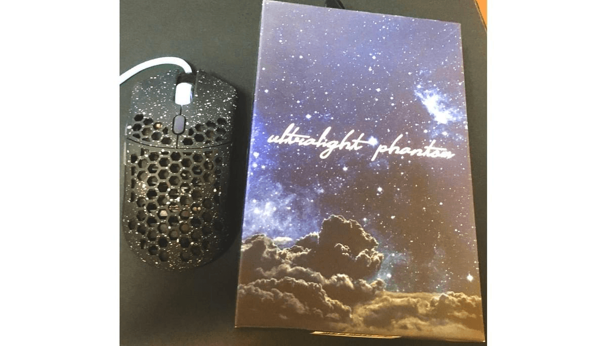
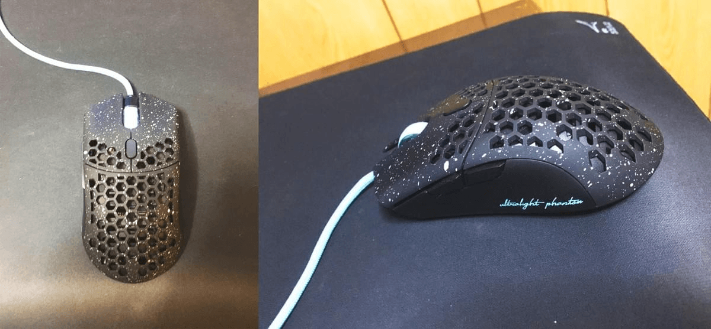
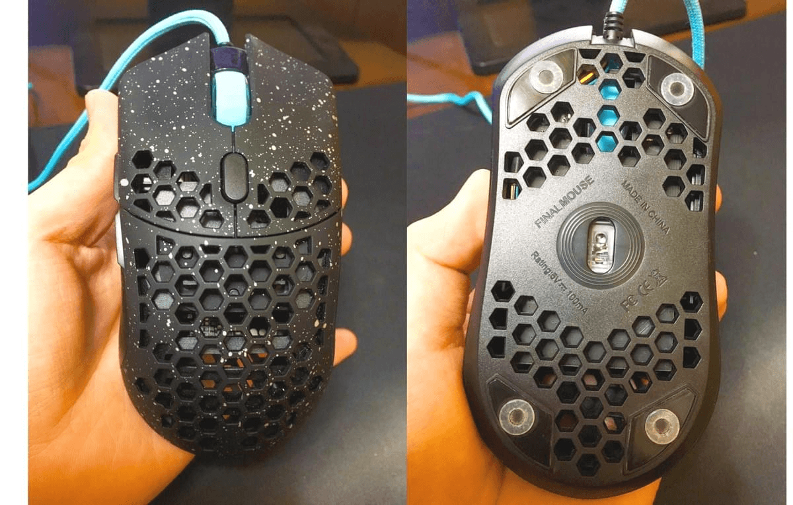

・2週間Finalmouseを使ってみて
はじめまして、ADELIAE所属のMUSHAMARUです。
今回はPNGのスポンサーである「ふもっふのおみせ」様から提供していただいた「Finalmouse Ultralight Phantom With Phantomcord」についてレビューをしていきたいと思います。

・製品紹介
Finalmouseは元々海外だけで販売していましたがPNGのスポンサーでもある海外輸入品の通販サイトの「ふもっふのおみせ」で取り扱われてから日本でも大人気になったマウスです。
人気のため海外でも日本でも品切れ状態であり手に入れるには長い期間待つ必要があります。
・何故人気なのか

流行っている理由の1つは圧倒的軽さにあります。他のマウスと比べても20~40gは軽いと思います。この軽さによりマウスを振る際の抵抗感が一切なく大げさに言えば手とマウスが一体となっているようにも感じます。
デザインも人気の要因です。値段は若干変わってきますが4種類のカラーバリエーションがあり表面の加工もコードも異なってきます。黒と白のPro Matte BlackとCompetition Whiteが通常のモデルでオレンジと星屑のsunsetとphantomは表面がゴム加工になります。Phantomcordは名前の通りFinalmouseの中でも最もコードの抵抗が少なくデザインされています。4種の中ではPhantomcordが一番人気のようです。
穴だらけのデザインはもしかしたら苦手の人もいるかもしれません。
・実際の使用してみて

実際にしばらく使用してみた感想は、昔からRazerDeathadder、SteelSeriesXAI、SENSEI、RayPawn、ZOWEI EC2と使用してきましたが断トツで軽いです。軽さのおかげか長時間ゲームをプレイしていても腕が疲れにくくなりました。ただめちゃめちゃ軽いので他のマウスから乗り換える時は若干の慣れが必要かもしれません。
クリックの固さは柔らかすぎず固すぎずで普通ぐらいだと思います。スクロールは想像以上に軽いです。耐久性はあまり高くないと思われるのであまり乱暴には扱わない方がいいかと。DPIはスクロール下のボタンですぐ切り替えれます。
Finalmouseを購入するか悩んでいる人がいたら購入して損はしないと思います。合う合わないは人それぞれあると思いますが今までのマウスとは全く別の物で値段に見合うマウスなので是非一度試してみてほしいです。
・MUSHAMARU
Twitter：@mmr_gaming
Finalmouse Ultralight Phantom With Phantomcord
・製品仕様
センサーモデル：PMW3360
センサー：光学
スクロールホイール ：あり
接続
ワイヤレス ：無し
接続 ：USB
サイズ&重量
重量：67g
メーカー：Final mouse
購入はこちら
・ふもっふのおみせについて
当ストアでは、お探しの製品を含めた世界各国の様々な海外製品を幅広くお取り扱いしております。「ふもっふ」とは、探していた物がやっと見つかった・手に入れることが出来た時の満足感や、ゆったりした気持ち・安心感を表す擬音語・造語です。
当ストアは、そんな気持ちを味わうことが出来るサービスとして、日々努力しております。
ふもっふのおみせ HP : https://www.fumo-shop.com/
ふもっふのおみせ Twitter : @fumoshop